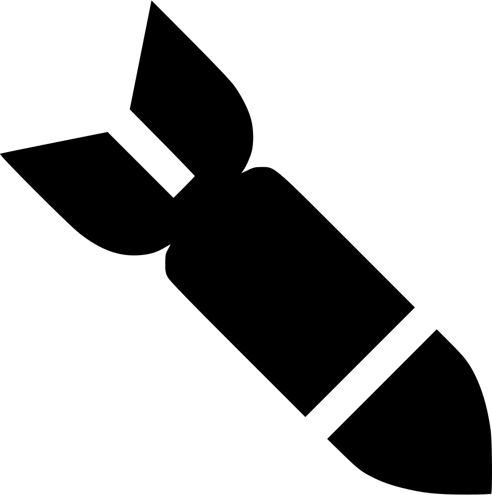
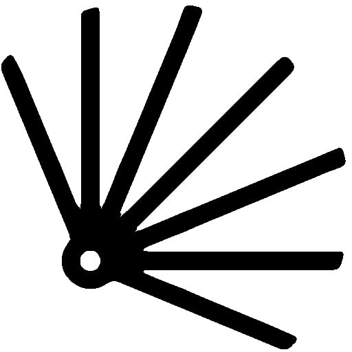
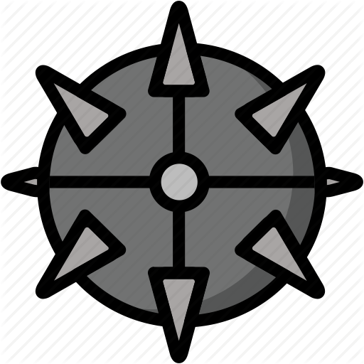

About
This game is a 2-player space strategy game. While the structure of the game play is turned based,
all the action happens in real time. Maneuver your ships cleverly and make good use of your weapons
to wipe out the opposing team!
Instructions
Download the zip-file below and run the AstroWars.exe executable file.
You can play this game with a keyboard and mouse. Keyboard shortcuts are indicated below.
Game Manual
Basics
Each turn, you will take turns planning the
movement and actions of their space ships (ideally while your opponent looks away). Once you are
satisfied, you may hit the "End Turn" button to let your opponent play. After the second player is
done, hitting the end turn button will trigger the realtime phase. During that time, neither player
can act until the next planning phase. The game ends when both ships on either team have been destroyed.
Movement
Resources
Each ship has limited Hull and Fuel. Getting hit will depleate Hull, if Hull reaches 0, the ship is
destroyed. Using the thrust engine will depleate Fuel, if Fuel reaches 0, ships still move but are unable to
thrust foward, making them mostly inert.
Weapons
|  |
Direct Missile: Fires a missile in the chosen direction. This is hard to hit but
the damage and effect area make up for it. |
|
Guided Missile: Fires a guided missile that will track any target (including friendlies!)
in front of it. While is is weaker than the direct missile, it is easier to hit with. |
|
Precision Laser: Fires a laser in a staight line. High damage but a long cooldown. |
 |
Scatter Laser: Fires an array of 5 lasers in a given direction. This is great to shoot
down incoming missiles. |
|  |
Mines: Creates three mines behind the ship. Mines detonate when any
ship comes into contact with them dealing significant damage. |
|
Nuclear Missile: Fires a missile in the given direction. The missile explodes on
its own and releases a radioactive cloud which damages ships inside it. |
Credits
This game was built using Unity 2018 as a PIE Northwestern Development Club project.
Game Director: Alexis Martineau
Programming and Design: Henry Abrahamson, Andreas Bugler, Alexander Stec